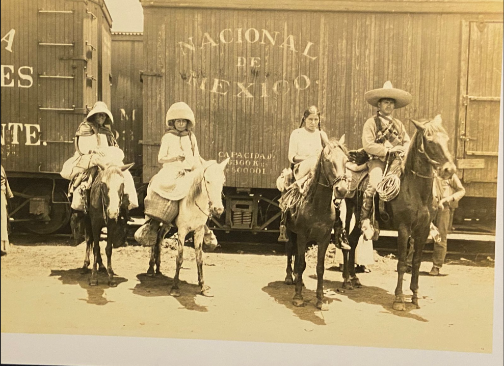
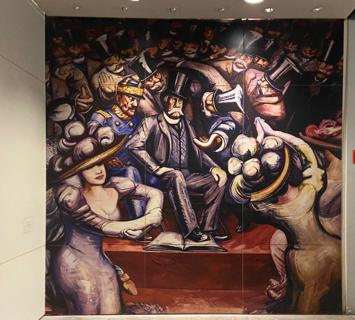
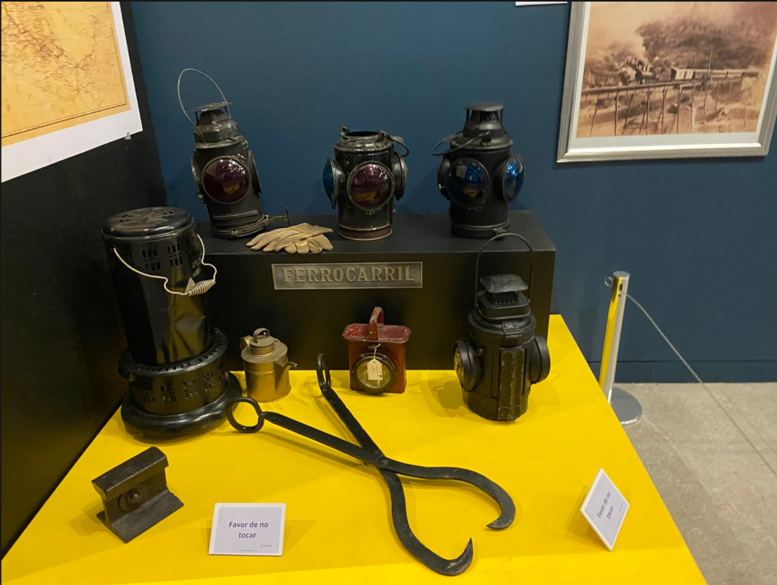

Sala 3 - La revolución democrática
La revolución democrática
Se centra en el movimiento encabezado por Francisco I. Madero contra la dictadura de Porfirio Díaz. Explica la demanda de elecciones libres, el inicio del levantamiento en 1910 y la caída del régimen porfirista.
A través del Plan de San Luis, Madero no solo convocó a las armas, sino que sembró la semilla de la legalidad. Este bloque detalla su transición de ideólogo a líder revolucionario, destacando su firme convicción de que el poder debía emanar de la voluntad popular y no de la herencia dictatorial.
Tras la toma de Ciudad Juárez y la renuncia de Porfirio Díaz, México vivió una primavera democrática. Aquí se analizan los Tratados de Ciudad Juárez y las históricas elecciones de 1911, donde el país ejerció, por primera vez en años, su derecho a elegir un nuevo destino


